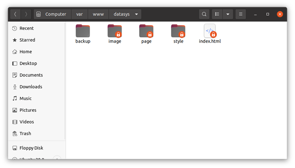
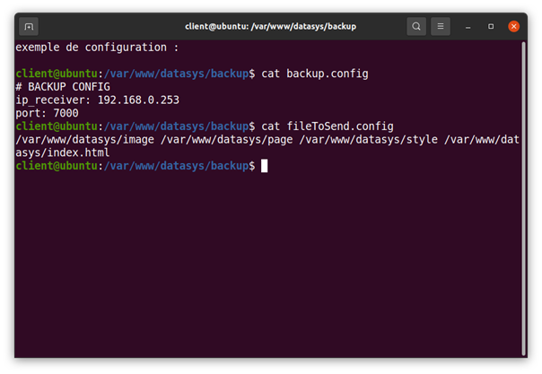
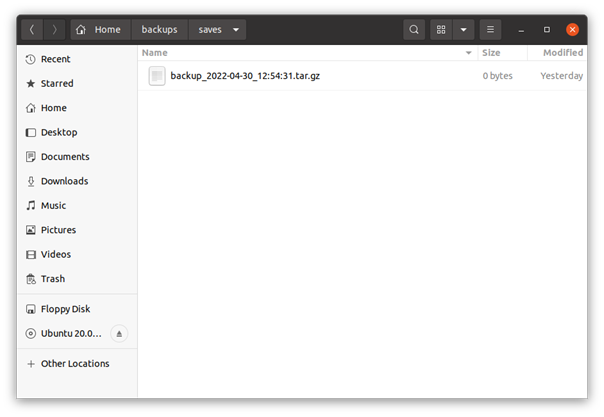

Installation services - Installation service de backup
Installation service de backup
Le service de backup proposé par Datasys se compose comme suit :
Un script côté serveur web s’occupe de transférer périodiquement une liste de fichiers compressés préalablement sélectionné. S’il n’y a eu aucune modification depuis la dernière sauvegarde le transfert est annulé affin d’économiser de la place sur le serveur de sauvegarde.
Un script côté serveur de sauvegarde s’occupe de récupérer l’archive transférer par le script précédant et la range.
Les sauvegardes sont tout nommés comme suit : « backup_date_heure.tar.gz » afin de pouvoir sélectionner celle voulu le plus facilement possible.
Chaque évènement lors du transfère est enregistrer dans un fichier log nommé backup.log. Le fichier est placé par défaut au même endroit que le script de transfère.
L’exécution des scripts est automatisée grâce à crontab mais peut toutefois être exécuté manuellement.
Il est possible de dupliquer le script dans plusieurs répertoires différents si vous souhaitez séparé distinctement différentes sauvegarde (dans le cas où vous hébergerez plusieurs sites web par exemple).
Installation sur le serveur web :
Nous préconisons de créer à la racine de votre site web un nouveau répertoire qui contiendra tous les fichiers nécessaires au service de sauvegarde
Le script est un fichier nommé « sendBackup.sh », vous devrez le placer dans votre répertoire nouvellement créé.
Il vous suffit désormais de l’exécuter.
cd /var/www/votre_domaine/backup/./sendBackup.shLe script va vous créer deux fichiers de configuration : backup.config et fileToSend.config
Vous devrez compléter le premier avec ladresse ip du serveur de sauvegarde ainsi qu’avec le port que vous utiliserez pour le transfert. Faites attention à ne pas utiliser un port préalablement utiliser par votre système.
Vous devrez compléter le fichier fileToSend.config avec la liste des fichiers que vous souhaitez sauvegarder.

Installation coté réception :
Du coté du serveur s’occupant de la réception nous préconisons de créer un répertoire utilisé uniquement pour le stockage des sauvegardes.
Vous pouvez désormais placer le script « receivebackup.sh » dans ce répertoire.
Il ne vous reste plus qu’à l’exécuter tout en précisant le port à utiliser pour la réception :
./receiveBackup.sh 7000Le scripte créera automatique un répertoire nommé « saves » puis y stockera toutes les sauvegardes réceptionnées.
Automatisation des scripts :
Coté réception :
crontab -e@reboot /chemin/vers/le/scriptCoté serveur web :
crontab -eMinutes Heure Jour Mois JourDeLaSemaine /var/www/votre_domaine/backup.sendBackup.souhaiterFélicitation ! Votre serveur web et votre serveur de backup sont mis en ligne et opérationnelle.